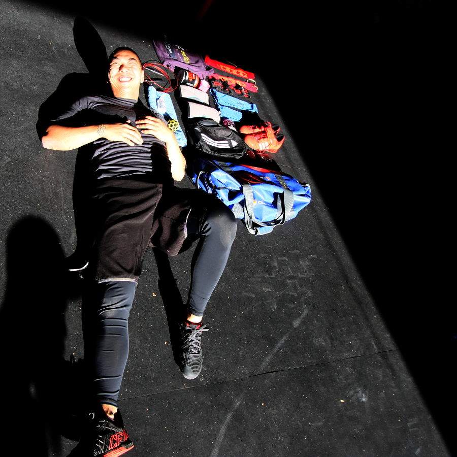

- Alphafit Crossfit Creature Regionals Hoodie
- I take pride in where I train and who I train with. Reppin' Creature all day !!!
- Again faster floss
- Got this at regionals 2014 found it good in recovery and prep of big lifting days
- L arginine
- I take it after training, find it good for recovery and keeps my brain from buring out.
- Rogue skipping rope
- This little sucker has served me well for a while, once I get 100 DU's unbroken going to trade it in for a RPM rope.
- Kneebands
- Keeping my knees warm and supported for squating and lunges.
- Mouthwash
- Keeping so fresh and so clean. You never know who you'll drop by.
- Shoebag
- These are for my lifters, just keeps them clean.
- Waterproof gym bag
- The vessel that stores all the stuff that helps me get my gains.
- Lifters
- Adidas Adipower Lifting shoes in red. They haven't had a good run yet, saving them for bigger lifts. You know what red shoes means...
- Shock Dr compression sleeves
- Good for those cold, cold mornings. Don't like wearing jumpers warming up.
- K Tape
- Helps to stop my hands from tearing as I need them for work.
- Rogue thick wrist wraps
- Used them when I first started crossfit, because I probably had weak wrists.
- Strength Wraps
- Got them at regionals 2014 to see that the fuss was about.
- Dryhands
- Liquid chalk. Good back up when there is no chalk.
- Moon Ball
- I use it for ankle mobility, it's wierd edges are really good to get into the creases of my ankle. it's firm enough not to make you cry.
- Wallet
- Cards and junk but no money.
- iPhone
- Primary function is for keeping up to date on social media, and occasionally calls and messages.
- Towel
- Post training wipe down. Gotta keep fresh.
- What are you wearing right now?
- Alphafit Crossfit Creature Regionals Hoodie, NPFL Tshirt and mma shorts
- How long have you been doing crossfit?
- Been doing Crossfit for a year and a half now.
- What gym do you go to?
- Crossfit Creature
- What's next on your kit shopping list?
- Been looking around for shorts that can take a beating.
- What do you do as a job?
- I've been in hospitality for over 10 years now. Started pouring beers and moved my way up the food chain to assistant manager, hopefully I'll be running my own gig one day.
- Competition history
- Only one, South West Smack Down. Was a great experience and good to get a feel for other the other boxes. We had an awesome team (Bec, Ben Irina and myself) and awesome coach JR coaching us through the day.
- What bit of kit would you use, even if you were sponsored by their competitor?
- Alphafit Crossfit Creature Regionals Hoodie
